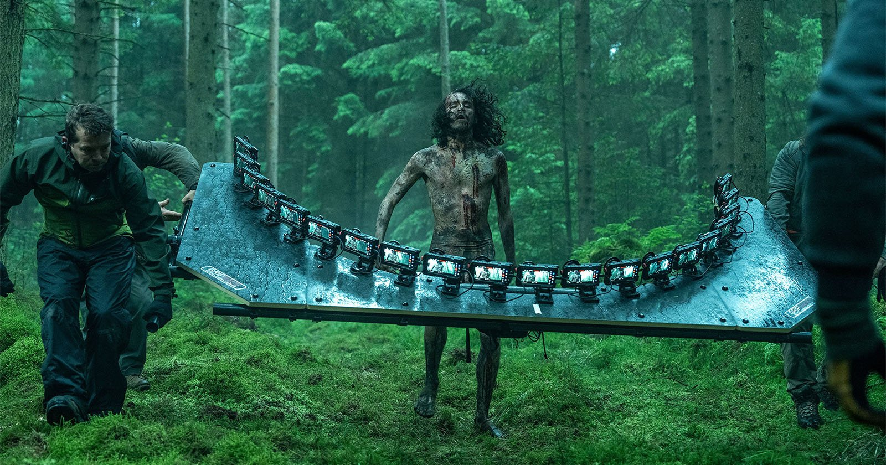

If you told me in 2007 that we’d get a sequel to *28 Weeks Later* in 2025, I would’ve rolled my eyes, screamed into a pandemic, and said “Cute fan theory, babe.” But here we are — 28 Years Later is real, it’s happening, and the internet is cautiously freaking out.
The trailer (what little we’ve seen so far) oozes dread. Abandoned cities. Shadows creeping. Echoes of sirens and regret. It’s giving “the rage virus aged poorly and came back with a vengeance.” Danny Boyle is back. Cillian Murphy too. But the title? Oh, honey, the title has Twitter doing cartwheels off cliffs.
28 Years Later — not *Months*, not *Days*, but *Years*. It’s bold. It’s memeable. And it’s got longtime fans divided. Some say it distances too far from the raw chaos of the original. Others say it’s genius: a reflection of real-time decay. Personally? It sounds like we’re skipping the action and going straight to post-apocalyptic therapy.
Visually, it looks sharp. Bleak, cold, clinical — like *Children of Men* met *The Last of Us* for a sad reunion dinner. But there’s this tension — not just on screen, but in the fandom. People are excited. People are nervous. People are ready to overanalyze every frame like it’s gospel.
And that’s the power of legacy. *28 Days Later* was raw. *28 Weeks Later* was chaotic. *28 Years Later*? It's shaping up to be existential. Let’s just hope it doesn’t spend all its time brooding instead of biting.
Final Take: It’s a long wait for a pandemic sequel — and expectations are dangerously high. If Boyle delivers, this could be legendary. If not? Well, at least we got the memes.
The rage is back. Let’s see if it’s still contagious.